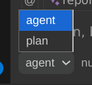

Agents / Subagents#

When using ECA chat, you can choose which agent it will use, each allows you to customize its system prompt, tool call approvals, disabled tools, default model, skills and more.
There are 2 types of agents defined via mode field (when absent, defaults to primary):
primary: main agents, used in chat, can spawn subagents.subagent: an agent allowed to be spawned inside a chat to do a specific task and return a output to the primary agent.
Built-in agents#
| name | mode | description |
|---|---|---|
| code | primary | Default, generic, used to do most tasks, has access to all tools by default |
| plan | primary | Specialized in building a plan before user switches to code agent and executes the complex task. Has no edit tools available, only preview changes. |
| explorer | subagent | Fast agent specialized for exploring codebases. Finds files by patterns, searches code for keywords, or answers questions about the codebase. Read-only, no edit tools. |
| general | subagent | General-purpose agent for researching complex questions and executing multi-step tasks. Can be used to execute multiple units of work in parallel. |
Inheriting from other agents#
You can create a new agent that inherits all settings from an existing agent using the inherit key. The new agent's settings are deep-merged on top of the inherited agent's settings, so any field you specify overrides the parent's value while the rest is preserved.
This is useful when you want a variant of a built-in or custom agent with small tweaks, without duplicating the entire configuration.
{
"agent": {
"my-plan": {
"inherit": "plan",
"defaultModel": "openai/gpt-5"
}
}
}
The my-plan agent above inherits all of plan's configuration (disabled tools, tool approval rules, prompts, etc.) but uses a different default model.
---
inherit: explorer
description: Explorer with a custom model
defaultModel: google/gemini-2.5-pro
---
Custom agents and prompts#
You can create an agent and define its prompt, tool call approval and default model.
{
"agent": {
"my-agent": {
"prompts": {
"chat": "${file:/path/to/my-agent-prompt.md}"
}
}
}
}
{
"prompts": {
"tools": {
"eca__edit_file": "${file:/path/to/my-tool-prompt.md}"
}
}
}
Subagents#
ECA can spawn foreground subagents in a chat, they are agents which mode is subagent.
The major advantages of subagents are:
- Less context polution: sometimes LLM needs to do a specific task that require multiple tool calls, but after finished, it doesn't need all those tool calls and iterations in its history, subagent works great for that, for example the
explorerbuilt-in subagent. - Less context window usage: Since subagents work as different chats/context/cleaner context, they have their own context window and when done the tools and process done there doesn't affect the primary agent context window, resulting and bigger conversations and less compaction needed.
- Parallel subagents: subagents are spawned as tools, and ECA supports parallel tool calls if LLM supports, this increase speed of task solution if LLM needs for example to explore 2-3 different things with
explorersubagent, spawning those in parallel.
Subagents can be configured in config or markdown and support/require these fields:
mode(required):subagentalways, this is what differs a primary agent from a subagent for ECA.description(required): a short summary of what this subagent will do, this is important to primary agent knows when to delegate to it.-
systemPromptor the markdown content (required unless usinginherit): Instructions for the subagent to what do when receive a task. -
inherit(optional): name of another agent to inherit all settings from. The subagent's own fields are merged on top. model(optional): which full model to use for this subagent, using primary agent model if not specified.tools(optional): same as ECA tool approval logic to control what tools are allowed/askable/denied.maxSteps(optional): set a max limit of turns/steps that his subagent must finish and return an answer.
Agents can be defined in local or global markdown files inside a agents folder, those will be merged to ECA config. Example:
---
mode: subagent
description: You sleep one second when asked
model: ${env:MY_MODEL:anthropic/sonnet-4.5}
tools:
byDefault: ask
deny:
- my_mcp__my_tool
allow:
- eca__shell_command
---
You should run sleep 1 and return "I slept 1 second"
Tool call approval
For more complex tool call approval, use toolCall via config
{
"agent": {
"sleeper": {
"mode": "subagent",
"description": "You sleep one second when asked",
"systemPrompt": "You should run sleep 1 and return \"I slept 1 second\"",
"defaultModel": "anthropic/sonnet-4.5",
"toolCall": {...},
"maxSteps": 25 // Optional: to limit turns in subagent
}
}
}